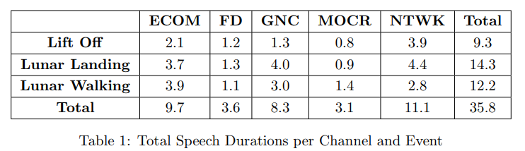

FS-2 Challenge Data

Figure shows the Stages of the Mission
The Stages 1, 5 and 6 were high impact mission-critical events which is ideal for the development of the 100-hour Challenge Corpus. With the quality of speech data varying between 0 and 20 dB SNR in this challenge corpus, the channel variability and complex interactions across all five channels of interest are mostly enc
apsulated in these 100 hours. The multichannel data are chosen from the major events given below:
- Lift Off (25 hours)
- Lunar Landing (50 hours)
- Lunar Walking (25 hours)
These landmark events have been found to possess rich information from the speech and language perspective.five channels out of the 29 channels were picked since it had the the most activity over the selected events.
- Flight Director (FD)
- Mission Operations Control Room (MOCR)
- Guidance Navigation and Control (GNC)
- Network Controller (NTWK)
- Electrical, Environmental and Consumables Manager (EECOM)
The personnel operating these five channels (channel owners/primary speakers) were in command of the most critical aspects of the mission, with additional backroom staff looping in for interactions with the primary owners of this channel.

The distribution of total speech content in each of the channels for every event has been given in the table above. Total speech content in the challenge corpus amounts to approximately 36 hours.
To make sure there is an equitable distribution of data into training, evaluation, and development sets for the challenge tasks, we have categorized the data based on noise levels, amount of speech content, and amount of silence. Due to the long silence durations, and based on importance of the mission, the speech activity density of the corpus varies throughout the mission.

The above table above is a general analysis of the Challenge data. Even though the Researchers are not provided with the channel information of Train, Test and Dev Sets, they may be able to make inferences by computing SNR’s for each file.
Challenge Rules and Conditions
- Participants can choose to take part in any one or more tasks from Fearless Steps challenge.
- This Challenge follows Open training conditions. Participants are allowed to use any available data in addition to the provided Challenge Data to train and tune their systems.
- Ground Truth Labels provided for a specific Task/Track should only be used for its corresponding task. Participants are not allowed to use the labels provided for a given task to improve system performance on any other task.
example 1: The refSAD ground truth labels in the Speaker Diarization Task 2 are prohibited from being used to benefit the performance of any other Tasks except "SD Track-2".
example 2: The "SAD" (Task 1) ground truth labels are prohibited from being used to benefit the performance of any other Tasks such as "ASR_track1" and "SD_track_1". - All ground truth labels and system submisions follow similar protocols as described in FEARLESS STEPS CHALLENGE PHASE-1 EVALUATION PLAN (https://go.aws/2Ha5mVq). Until further notice from the organisers (which shall be made available on the challenge website: https://fearless-steps.github.io/ChallengePhase2/), Participants are requested to use the information provided in the Evaluation plan and the Phase-1 Challenge website (http://fearlesssteps.exploreapollo.org/) to develop and evaluate their systems.
- All Challenge participants are required to submit a conference paper(s) describing their systems (and reporting performance on Dev and Eval sets) to the "FEARLESS STEPS CHALLENGE PHASE-2" special sessions section at ISCA INTERSPEECH-2020.
- Researchers who intend to use FEARLESS STEPS corpus for other speech and language tasks outside the scope of Phase-2 Challenge are must also submit their paper(s) with system descriptions to the Special Sessions section for INTERSPEECH-2020.
To participate in the challenge, Please click the button below to register!